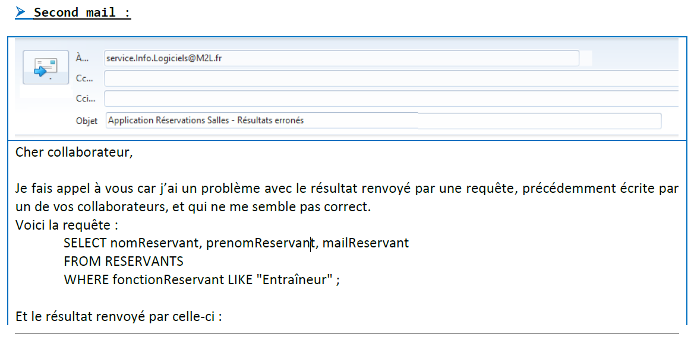
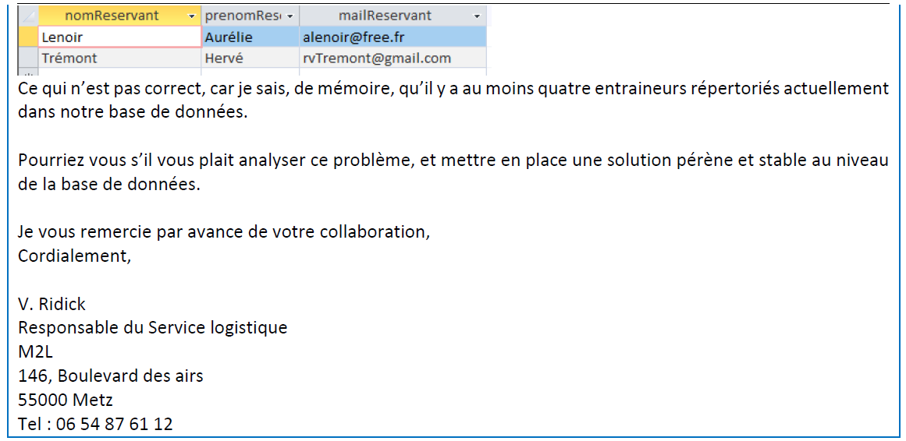

AP1.1 RÉSERVATION SALLES
En tant que membre de l'équipe informatique, mon rôle consiste à évaluer l'application en cours de développement et à préparer son développement ultérieur.
Mes missions comprennent la vérification des fonctionnalités et du bon fonctionnement de l'application, la rédaction d'une documentation explicative pour les utilisateurs et l'exploitation et l'adaptation de la base de données.
Mise en commun avec le tableau de synthese
Gérer le patrimoine informatique
on a en tant que ressources numériques : le cahier des charges, La description du contexte de la M2L, La copie des mails envoyés par le responsable des réservations, L'exécutable de l'application, La base de données Access.
Pour vérifier les conditions de la continuité d’un service informatique, notre responsabilité consistait à effectuer une analyse approfondie des fonctionnalités de l'application, en noud assurant que les fonctionnalités attendues sont fonctionnelles. Les détails sur les fonctionnalités attendues sont spécifiés dans le cahier des charges fonctionnel, qui est fourni en annexe 1. De plus, vous pouvez également proposer des améliorations ou des fonctionnalités supplémentaires si vous estimez que cela pourrait améliorer l'application proposée.
On a pour mission d’Exploiter et adapter la base de données. Le problème étant qu’il y a des règles a respecter notamment avec la CNIL et les données personnelles. Les données à caractère personnel que traite cette application sont les nom, prénom, numéro INSEE, fonctions, numéro de téléphone et adresse mail des réservant et les adresses mail des ligues.
◦ Le recueil du consentement :
Il faut demander le consentement à l’utilisateur de collecter ses données personnelles avant de lancer la collecte des données.Le consentement préalable est nécessaire si la collecte concerne des données personnelles comme actuellement avec la collecte de numéro INSEE.
• Le droit d’opposition :
Les utilisateurs doivent pouvoir s’opposer à la réutilisation par le responsable du fichier de leur coordonnées pour différents motif, toutes personnes peut s’y opposer pour des motif légitimes.
• Le droit d’accès et de rectification :
Toutes personnes peuvent avoir accéder à l’ensemble des informations le concernant, connaitre leurs origines, accéder aux informations sur lesquelles le responsable du fichier s’est fondé le responsable de dossier, permettre d’obtenir la copie et exigés que ses données (à l’utilisateur) soient rectifiées, complétées, mise à jour ou supprimer.
Répondre aux incidents et aux demandes d’assistance et d’évolution
Ici, Notre mission consistait à repondre à des mails. Dans ces mails, il y avait differentes demandes comme corriger une requete, repondre à des questions... Certaines demandes se traduisent comme ticket. Exemple :


Mettre à disposition des utilisateurs un service informatique
Votre mission consistera à rédiger une documentation destinée aux futurs utilisateurs de l'application. L'objectif de cette documentation est de rendre l'apprentissage de l'application aussi simple que possible pour les utilisateurs à venir.